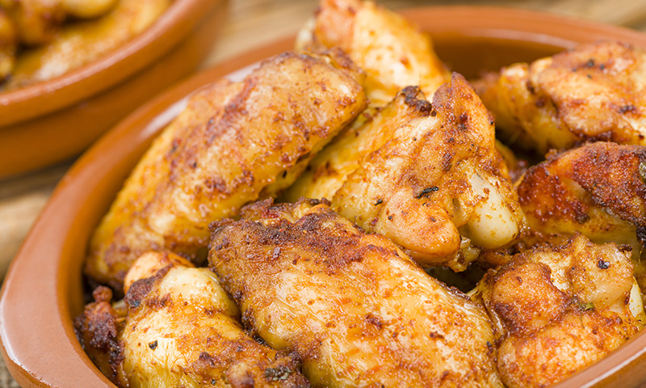
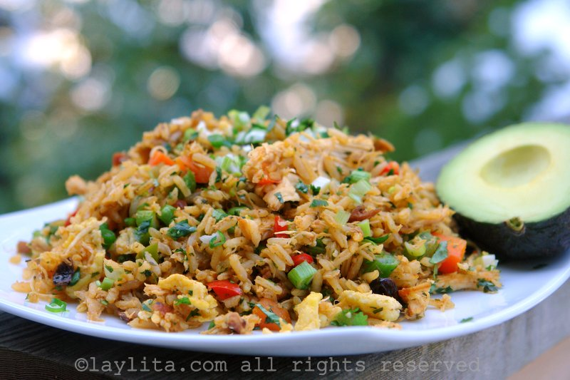

GASTRONOMIA
Blog dedicado a la
Gastronomia
Favoritos:
Historial:
PIERNAS DE POLLO ASADO
02-Marzo-2018

El pollo es una de las carnes más suaves que contiene proteínas, vitaminas, ácido fólico el que sirve para el ideal funcionamiento del cerebro.
Una de las recetas tradicionales más conocidas a nivel nacional es el pollo al ajillo.
Un plato muy sabroso que, en esta ocasión, se acompaña de champiñones, uno de los aderezos que también forman parte de la cocina más conservadora

Juan: Este blog es interesante.

Paulina: Gracias a este post aprendi nuevas recetas.
Amelita: Interesante, muy buenas recetas.
CHAULAFAN
29-Agosto-2015

Hay muchos tipos diferentes de Chaulafán: camarones, pollo, cerdo, mezclada. En la mayoría de las ciudades importantes en el Ecuador se encuentra chifas o restaurantes chinos, por lo general son los mejores lugares para comer Chaulafán.
Se puede comer ya sea en el restaurante o tomar para ir. Cuando estaba en la escuela secundaria en Loja, hubo un chifa justo enfrente de la casa de uno de mis mejores amigos; siempre me hizo tan hambre cada vez que pasaba por ese lugar.